Before/after sheet: PR #34 versus this prototype at requested 128². Gallery: new results at requested 96² / 128² / 256²; scale changes are disclosed. Blue: simulated water; gold: start; white: origins. Reference: WorldCover water cells in the after frame; grey means incomplete coverage.
96² · 120 m/tile Play yes · signature yes Same-footprint water 74.4%
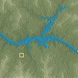
128² · 60 m/tile Play yes · signature yes Same-footprint water 83.2%
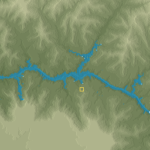
256² · 60 m/tile Play yes · signature yes Same-footprint water 80.5%
2. Colca Canyon
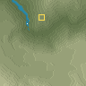
96² · 60 m/tile Play yes · signature yes Same-footprint water 41.8%
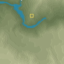
128² · 60 m/tile Play yes · signature yes Same-footprint water 74.7%
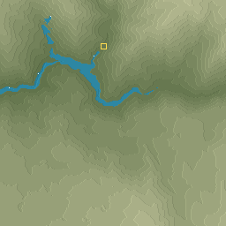
256² · 60 m/tile Play no · signature yes Same-footprint water 80.5%
3. Verdon Gorge
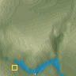
96² · 60 m/tile Play yes · signature yes Same-footprint water 79.5%
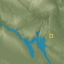
128² · 120 m/tile Play yes · signature yes Same-footprint water 82.0%
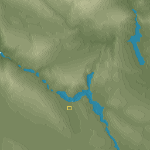
256² · 60 m/tile Play yes · signature yes Same-footprint water 94.4%
4. Tara Gorge
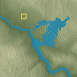
96² · 60 m/tile Play yes · signature yes Same-footprint water 100.0%
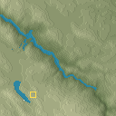
128² · 120 m/tile Play yes · signature yes Same-footprint water 99.9%
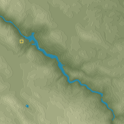
256² · 60 m/tile Play no · signature yes Same-footprint water 100.0%
5. Mississippi birdfoot
96² · 60 m/tile Play no · signature yes Same-footprint water 99.3%
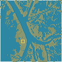
128² · 120 m/tile Play no · signature yes Same-footprint water 99.6%
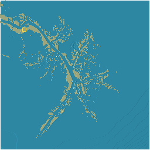
256² · 240 m/tile Play no · signature yes Same-footprint water 98.1%
6. Danube delta
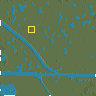
96² · 60 m/tile Play no · signature yes Same-footprint water 11.6%
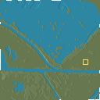
128² · 60 m/tile Play no · signature yes Same-footprint water 19.2%
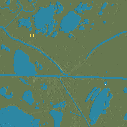
256² · 60 m/tile Play no · signature yes Same-footprint water 21.6%
7. Waimakariri River
96² · 60 m/tile Play no · signature yes Same-footprint water 99.9%
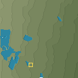
128² · 60 m/tile Play no · signature yes Same-footprint water 99.2%
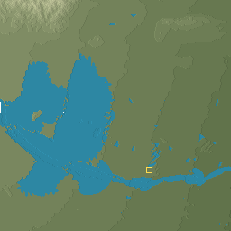
256² · 120 m/tile Play yes · signature yes Same-footprint water 95.7%
8. Tagliamento River
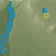
96² · 60 m/tile Play yes · signature yes Same-footprint water 93.1%
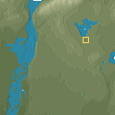
128² · 60 m/tile Play yes · signature yes Same-footprint water 95.4%
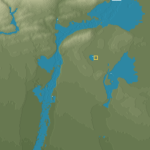
256² · 60 m/tile Play yes · signature yes Same-footprint water 99.4%
9. Goosenecks San Juan
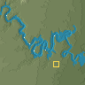
96² · 120 m/tile Play yes · signature yes Same-footprint water 100.0%
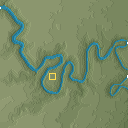
128² · 60 m/tile Play yes · signature yes Same-footprint water 99.5%
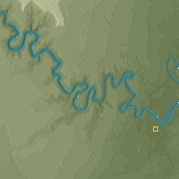
256² · 60 m/tile Play yes · signature yes Same-footprint water 99.9%
10. Mamore River
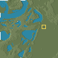
96² · 60 m/tile Play no · signature yes Same-footprint water 99.4%
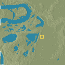
128² · 60 m/tile Play no · signature yes Same-footprint water 98.7%
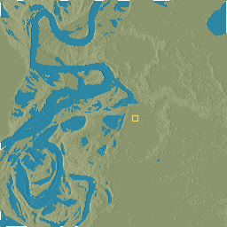
256² · 60 m/tile Play no · signature yes Same-footprint water 99.3%
11. Death Valley Badwater fan
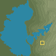
96² · 60 m/tile Play yes · signature yes Same-footprint water 25.7%
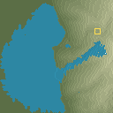
128² · 60 m/tile Play yes · signature yes Same-footprint water 15.6%
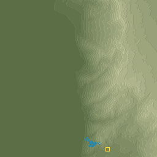
256² · 60 m/tile Play yes · signature yes Same-footprint water 8.7%
12. Taklimakan Kunlun fan
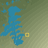
96² · 240 m/tile Play yes · signature yes Same-footprint water n/a
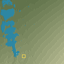
128² · 120 m/tile Play yes · signature yes Same-footprint water n/a
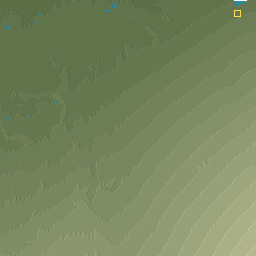
256² · 120 m/tile Play no · signature yes Same-footprint water 98.3%
13. Crater Lake
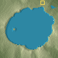
96² · 120 m/tile Play yes · signature yes Same-footprint water 100.0%
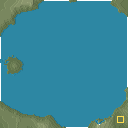
128² · 60 m/tile Play yes · signature yes Same-footprint water 90.9%
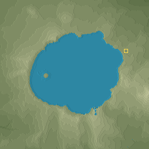
256² · 60 m/tile Play yes · signature yes Same-footprint water 99.9%
14. Ngorongoro
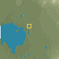
96² · 120 m/tile Play yes · signature yes Same-footprint water 98.9%
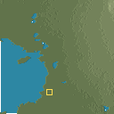
128² · 60 m/tile Play yes · signature yes Same-footprint water 99.7%
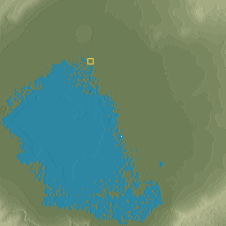
256² · 60 m/tile Play yes · signature yes Same-footprint water 90.4%
15. Mount Fuji
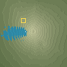
96² · 120 m/tile Play yes · signature yes Same-footprint water n/a
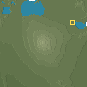
128² · 240 m/tile Play yes · signature yes Same-footprint water n/a
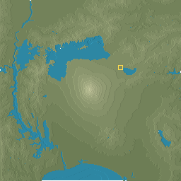
256² · 240 m/tile Play yes · signature yes Same-footprint water 94.6%
16. Mount Taranaki
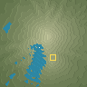
96² · 60 m/tile Play yes · signature yes Same-footprint water n/a
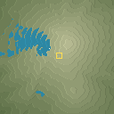
128² · 30 m/tile Play yes · signature yes Same-footprint water 0.0%
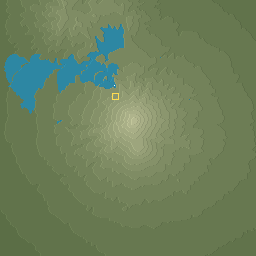
256² · 60 m/tile Play yes · signature yes Same-footprint water 23.0%
17. Monument Valley
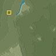
96² · 60 m/tile Play yes · signature yes Same-footprint water 75.4%
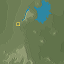
128² · 60 m/tile Play yes · signature yes Same-footprint water 75.1%
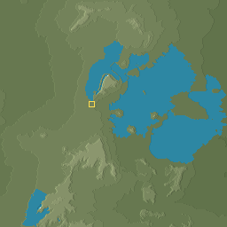
256² · 60 m/tile Play no · signature yes Same-footprint water 83.1%
18. Capitol Reef
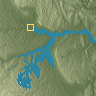
96² · 60 m/tile Play yes · signature yes Same-footprint water n/a128² · 60 m/tile Play yes · signature yes Same-footprint water n/a256² · 60 m/tile Play yes · signature yes Same-footprint water n/a
19. Badlands National Park
96² · 60 m/tile Play yes · signature yes Same-footprint water 8.8%128² · 60 m/tile Play no · signature yes Same-footprint water 4.6%256² · 60 m/tile Play no · signature yes Same-footprint water 58.1%
20. Bardenas Reales
96² · 60 m/tile Play yes · signature yes Same-footprint water n/a128² · 60 m/tile Play no · signature yes Same-footprint water 96.2%256² · 120 m/tile Play yes · signature yes Same-footprint water 95.7%
21. Li River Yangshuo
96² · 60 m/tile Play yes · signature yes Same-footprint water 78.8%128² · 60 m/tile Play yes · signature yes Same-footprint water 98.0%256² · 60 m/tile Play no · signature yes Same-footprint water 98.8%
22. Phong Nha
96² · 60 m/tile Play yes · signature yes Same-footprint water 15.3%128² · 60 m/tile Play yes · signature yes Same-footprint water 98.2%256² · 60 m/tile Play yes · signature yes Same-footprint water 96.3%
23. Geirangerfjord
96² · 60 m/tile Play yes · signature yes Same-footprint water 41.8%128² · 60 m/tile Play yes · signature yes Same-footprint water 99.6%256² · 60 m/tile Play no · signature yes Same-footprint water 99.2%
24. Milford Sound
96² · 60 m/tile Play yes · signature yes Same-footprint water 99.7%128² · 60 m/tile Play yes · signature yes Same-footprint water 99.6%256² · 60 m/tile Play no · signature yes Same-footprint water 98.2%
25. Yosemite Valley
96² · 240 m/tile Play yes · signature yes Same-footprint water 33.9%128² · 60 m/tile Play yes · signature yes Same-footprint water 3.9%256² · 60 m/tile Play yes · signature yes Same-footprint water 61.6%
26. Lauterbrunnen
96² · 60 m/tile Play no · signature yes Same-footprint water 57.6%128² · 60 m/tile Play no · signature yes Same-footprint water 83.6%256² · 60 m/tile Play no · signature yes Same-footprint water 53.0%
27. Drakensberg Amphitheatre
96² · 60 m/tile Play yes · signature yes Same-footprint water 84.6%128² · 60 m/tile Play no · signature yes Same-footprint water 59.5%256² · 60 m/tile Play yes · signature yes Same-footprint water 88.8%
28. Bandiagara
96² · 120 m/tile Play yes · signature yes Same-footprint water n/a128² · 60 m/tile Play yes · signature yes Same-footprint water n/a256² · 30 m/tile Play yes · signature yes Same-footprint water n/a
29. Colorado Plateau
96² · 60 m/tile Play yes · signature yes Same-footprint water n/a128² · 60 m/tile Play yes · signature yes Same-footprint water n/a256² · 60 m/tile Play no · signature yes Same-footprint water 48.3%
30. Tibetan Plateau
96² · 60 m/tile Play yes · signature yes Same-footprint water n/a128² · 240 m/tile Play yes · signature yes Same-footprint water n/a256² · 60 m/tile Play yes · signature yes Same-footprint water 14.8%
31. English Lake District
96² · 60 m/tile Play yes · signature yes Same-footprint water 61.8%128² · 60 m/tile Play yes · signature yes Same-footprint water 99.5%256² · 60 m/tile Play no · signature yes Same-footprint water 99.4%
32. Finnish Saimaa
96² · 60 m/tile Play no · signature yes Same-footprint water 99.6%128² · 60 m/tile Play yes · signature yes Same-footprint water 99.7%
No result: Error: page.evaluate: Error: Benchmark timeout after 900000 ms
at window.benchConvert (eval at evaluate (:290:30), <anonymous>:11:34)
at async eval (eval at evaluate (:290:30), <anonymous>:3:17)
at async <anonymous>:316:30
256² · ? m/tile Play n/a · signature n/a Same-footprint water n/a
33. Green and Colorado
96² · 240 m/tile Play yes · signature yes Same-footprint water 97.4%128² · 60 m/tile Play yes · signature yes Same-footprint water 98.2%256² · 60 m/tile Play yes · signature yes Same-footprint water 97.9%
34. Rio Negro and Solimoes
96² · 120 m/tile Play yes · signature yes Same-footprint water 99.0%128² · 120 m/tile Play yes · signature yes Same-footprint water 99.9%256² · 60 m/tile Play yes · signature yes Same-footprint water 99.9%
35. Victoria Falls
96² · 240 m/tile Play yes · signature yes Same-footprint water 97.0%128² · 120 m/tile Play yes · signature yes Same-footprint water 99.1%256² · 240 m/tile Play yes · signature yes Same-footprint water 99.4%
36. Iguazu Falls
96² · 240 m/tile Play no · signature yes Same-footprint water 99.7%128² · 240 m/tile Play no · signature yes Same-footprint water 99.6%256² · 240 m/tile Play yes · signature yes Same-footprint water 100.0%
37. Cliffs of Moher
96² · 60 m/tile Play yes · signature yes Same-footprint water 17.9%128² · 60 m/tile Play yes · signature yes Same-footprint water 99.9%256² · 60 m/tile Play yes · signature yes Same-footprint water 100.0%
38. Twelve Apostles
96² · 60 m/tile Play yes · signature yes Same-footprint water 99.8%128² · 120 m/tile Play yes · signature yes Same-footprint water 99.7%256² · 60 m/tile Play yes · signature yes Same-footprint water 99.9%
39. Stockholm archipelago
96² · 60 m/tile Play no · signature yes Same-footprint water 100.0%128² · 60 m/tile Play no · signature yes Same-footprint water 31.0%256² · 60 m/tile Play no · signature yes Same-footprint water 100.0%
40. Thousand Islands Saint Lawrence
96² · 120 m/tile Play yes · signature yes Same-footprint water 99.6%128² · 60 m/tile Play yes · signature yes Same-footprint water 99.7%256² · 60 m/tile Play yes · signature yes Same-footprint water 99.6%
41. Kansas prairie
96² · 60 m/tile Play no · signature yes Same-footprint water 19.5%128² · 60 m/tile Play no · signature yes Same-footprint water 15.5%256² · 60 m/tile Play no · signature yes Same-footprint water 53.0%
42. Dutch polder
96² · 60 m/tile Play no · signature yes Same-footprint water 87.9%128² · 60 m/tile Play no · signature yes Same-footprint water 89.0%256² · 60 m/tile Play no · signature yes Same-footprint water 12.8%
43. Ganges plain
96² · 240 m/tile Play yes · signature no Same-footprint water 30.3%128² · 30 m/tile Play no · signature yes Same-footprint water 0.1%256² · 60 m/tile Play yes · signature yes Same-footprint water 9.1%
44. Sahara dunes
96² · 60 m/tile Play yes · signature yes Same-footprint water n/a128² · 60 m/tile Play yes · signature yes Same-footprint water n/a256² · 240 m/tile Play yes · signature yes Same-footprint water n/a
45. Central Pacific control
96² · 240 m/tile Play yes · signature yes Same-footprint water n/a128² · 240 m/tile Play no · signature yes Same-footprint water n/a256² · 60 m/tile Play yes · signature yes Same-footprint water n/a
46. Greenland ice sheet
96² · 30 m/tile Play yes · signature yes Same-footprint water n/a128² · 30 m/tile Play no · signature yes Same-footprint water n/a256² · 240 m/tile Play no · signature yes Same-footprint water n/a
47. Svalbard valley
96² · 60 m/tile Play yes · signature yes Same-footprint water 99.9%128² · 60 m/tile Play yes · signature yes Same-footprint water 99.2%256² · 120 m/tile Play yes · signature yes Same-footprint water 99.9%
48. Antarctic Dry Valleys
96² · 240 m/tile Play no · signature yes Same-footprint water n/a128² · 60 m/tile Play yes · signature yes Same-footprint water n/a256² · 60 m/tile Play yes · signature yes Same-footprint water n/a
49. Taveuni dateline
96² · 60 m/tile Play yes · signature yes Same-footprint water 99.5%128² · 120 m/tile Play no · signature yes Same-footprint water 99.8%256² · 240 m/tile Play no · signature yes Same-footprint water 99.9%
50. Kathmandu valley
96² · 120 m/tile Play yes · signature yes Same-footprint water 84.7%128² · 120 m/tile Play yes · signature yes Same-footprint water 90.9%256² · 120 m/tile Play yes · signature yes Same-footprint water 85.0%